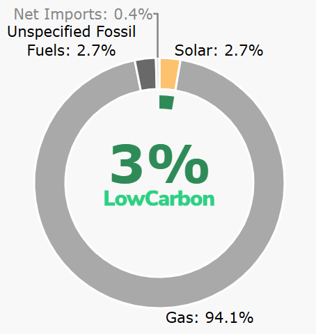

Energy Conservation is the act of reducing wasteful energy through cutting down on unnecessary use of electricity and using energy-efficient appliances.
Did you know that that more than 95% of Singapore's energy is made from fossil fuels, especially natural gases? This is mainly because Singapore does not have the space or resources to make energy, needing other country's resources to produce energy.
The image below shows the different types of ways Singapore's energy is produced through percentages(%).

From the image above , it is evident that fossil fuels is almost always used to produce energy. Renewable energy, which is solar energy, is just barely pushing 3%, making only about 3% of energy produced is low carbon. By burning fossil fuels, it creates greenhouse gases(carbon dioxide, methane etc) as well as toxic gases(sulfur dioxide etc). These gases causes water pollution, land pollution, and further damaging the already bad climate that we have (more details of how these gases affect our environment will be on the next page). Thus, in order for Singapore minimise their harm to the environment, the most plausible way is to cut down on our use of electricity.